Child app + guardian app + websiteProduct and UX design2026
JoanX: rewarding children for putting the phone away while they walk
A walking-safety game for children and a deliberately narrow weekly report for the adults who look after them. How I designed it, the decisions that shaped it, and what is still untested.
Left to right: the child's home, the safety moment's first and last steps, the guardian's weekly report and alerts. Captured from my design prototype; every number on them is sample data.
In one paragraph
Korean media call children who walk with their eyes on a phone 스몸비 (“smombies”). The tools parents have mostly treat it as a control problem: lock the phone, schedule it off, or track the child. My reading is that children learn to work around those tools and that tracking costs trust. JoanX tries a different bet. The phone notices when a child keeps using the screen while walking and gives one gentle buzz. It steps in further only if the child carries on, and it never locks the screen. Walking with the phone put away earns points that grow a buddy character, hatch eggs and power battles against villains. Guardians get a weekly picture of whether the habit is improving, and an urgent alert if a possible fall goes unanswered. They never see location, messages, photos or which apps the child uses.
Product
A child app and a guardian app from one codebase, plus a marketing website
Users
Children aged roughly 6 to 13, and the parents or guardians who install it
My role
Product and UX design of both apps: structure, every screen, the warning and reward rules, the design system, and the working prototype the product was built from. Direction and design of website V2.
Others
Joan Company, the client: the functional spec, the characters and their approval. The development team: the production apps. Myt H Mon: the 17 onboarding story illustrations. Claude, as AI pair programmer: most of the prototype's code, under my direction.
Timeline
5 June to 2 October 2026, 332 commits in the prototype
Status
The development team has launched the product, built from this design. This page has no launch date, store data or usage figures, so it makes no claims about results.
Each row opens the full decision in chapter 4. The right-hand column describes what the design does, not its effect on children, which hasn't been measured (chapter 9).
Statements about the product are checked against the prototype's code, the spec and the git history. Labels mark the exceptions:Interpretation my reading where no reason is recordedGap untested, missing or conflicting between sources
Chapter 2 · Context
The problem
Why the usual answers fail
The problem is 스몸비 (“smombie”): children using a phone while walking near roads. Existing tools treat it as a control problem. They block the screen, lock it on a schedule, or track where the child is. My reading is that these approaches feel like punishment, that children find ways round them, and that tracking costs trust between parent and child.
Gap This is my reasoning, not research. No interviews, surveys or field observation were done, so the whole design rests on reasoning and on building the rules and seeing how they behave. Every UX claim here is reasoned, none is tested.
The product bet
Make walking with the phone put away the thing that wins the game.
Instead of taking the phone away, JoanX makes the safe behaviour pay inside a game the child already cares about. The parent's view stays deliberately narrow, so the product can't turn into surveillance.
Constraints that shaped every screen
Constraint
Source
What it forced
Never lock the screen
F-10 excluded
Every intervention has to persuade. None of them can block, so calls and texts are never cut off.
Detection is a guess
F-03, F-04, F-30 (90% accuracy is a target)
A false alarm must cost the child very little, so the first signal is one buzz.
No location, no message reading
F-05, F-06 excluded
The guardian report can only describe behaviour, never place or content.
Client-owned characters
Joan Company approves names, stories and art
Art and names change at the client's pace, so the UI had to survive art swaps.
How success was defined
The spec defines success through the guardian's eyes: a reduction rate in risky moments against the child's own earlier behaviour, how often warnings are accepted, and growth in safe walking time (F-20). Detection accuracy has a target of 90% or more during a tuning period (F-30). No figures for any of these exist yet, so this case study can describe what the design does, but not whether it works.
Chapter 3 · Context
How JoanX works
Before the decisions, the product itself: what a family does with it, how the two apps are organised, the one sequence everything hangs off, and the line the guardian app never crosses.
One walk to school
The guardian sets up. Only the guardian has an account. They add the child and get a six-digit code that works for five minutes.
The child joins. The child watches a short illustrated story, types the code, hatches a starter egg (their first buddy, Lumi), and grants four phone permissions one at a time. A refused permission limits protection instead of stopping it.
The walk. Home says “You're protected”. If the child keeps using the screen while walking, the safety moment runs: one buzz first, more only if they carry on. Stopping earns points. Ignoring is recorded. The phone is never locked.
After school. Points buy XP for the buddy, eggs and outfits. Battles against villains open once the child has stopped walking.
That week, the guardian. The report shows how often the child stopped when warned, how often they ignored it, and safe walking time against last week. A possible fall that the child doesn't answer within 20 seconds alerts the guardian at once.
CollectBuddies and rooms, badges, buddy detail and outfits, the character book
⚔ Centre: villain roadTen villains in order, then battle: pick a fighter, versus, result
FriendsFriends list, visit a friend's room, leave a guestbook note. No chat.
ProfileMy room and decorating, settings, help
Outside the tabsOnboarding story, the safety moment, the fall check
Parent app · 4 tabs + centre button
ReportsWeekly picture per child, response to warnings, AI summary
ChildrenDevice status, rules and settings per child, add a child
Centre: connectPair a child's phone by code or QR
AlertsSafety and progress feed, urgent fall alerts, join requests
ProfileAccount, guardian groups, help
The core loop: the safety moment
Everything in the product hangs off one sequence. It is a rule engine more than a screen, so I mapped it first.
Drawn from the rules in data.jsx (INTERVENTION, POINTS, SAFE_STOP) and spec F-04 to F-12. A stop pays only when four signals hold: a warning was shown, phone use stopped, the screen turned off, and walking continued. Paid stops have a 60-second cooldown and a 300-point daily cap.
The whole moment, to scale
Drawn in seconds, the ladder shows how patient it is. If a child ignores everything, JoanX spends about 80 seconds over three rounds asking, then records it and stops. The lower lane is the reward rule from decision B: stopping before a card appears is worth more than stopping after one, in every round.
Show the timeline as a table
Step
Seconds
A stop earns
grace
0–10 s
+50
buzz + hold
10–12 s
+50
card
12–17 s
+20
message
17–30 s
+20
quiet
30–35 s
—
buzz + hold
35–37 s
+50
card
37–42 s
+20
message
42–55 s
+20
quiet
55–60 s
—
buzz + hold
60–62 s
+50
card
62–67 s
+20
message
67–80 s
+20
Spec timings from INTERVENTION and WarningOverlay.jsx: 10 s grace, then per round one buzz, a 2 s hold, a 5 s card and 13 s of messages, with 5 quiet seconds between rounds. The prototype shortens the grace to 2.6 s for demos.
The parent's view has a hard edge
Rendered from PARENT_SEES in data.jsx, the single list both apps read. Its last change (18 Sep) swapped a row that was never true, "Which app types are blocked", for "Whether protection is on".
The list is a single data structure (PARENT_SEES), so there is one place to change a promise. A code comment states the rule: “breaking one means editing this list, in the open.” The website's privacy section shows it to guardians. Gap The intent is for the child to see the same list on their own phone, but the prototype only renders it in an alternative child profile layout that isn't the default, and the guardian app doesn't render it yet.
Chapter 4 · The product
Five key decisions
Five decisions carried the most weight. Each follows the same shape: what the person was trying to do, what made it hard, what evidence pointed at the problem, and what changed.
A. Interrupting a child without punishing them
Problem
The app has to interrupt a child in the middle of a walk, and its detection is a guess. A loud or blocking interruption gets dismissed or resented, and a false alarm teaches the child to ignore the app.
Constraints
The screen is never locked (F-10 excluded), so the child can always call or text. The spec asks for a message covering about 20% of the screen (F-09).
Decision
A ladder in which each step costs the child a little more attention, and only if the risk continues: one buzz, a two-second wait, a card with one action, then a character message that grows firmer over up to three rounds.
Why
A false alarm at the first step costs one vibration. A child who reacts to the buzz never sees a card, and earns more for it (decision B).
Evidence and limits
The ladder comes from the spec (F-08, F-09). Its readability problems were found by running it in the prototype and are recorded in commits (below). Gap No test with children is recorded.
Choosing the ladder was the easy part. Most of the work was making each step readable and fair, and five problems only showed up once it ran:
The message vanished before it could be read."It faded the whole sheet — mascot, copy and both buttons — on the message cycle, so a line was gone in 1.5s and the safety CTA went with it." The sheet now holds while the risk lasts and only the words cross-fade (791ef69). The hold was later lengthened to 4 seconds. Gap That differs from the spec's 1.5 s, and no client approval is recorded.
Dismiss looked like the safe action. The dismiss pill was the same colour as its backdrop and read as bare text, and it should not look equal to stopping: "it acknowledges the warning, it does not end the risk" (2aa2e6e).
The reward was a second interruption. A celebration pop-up after the child stopped was removed: "The modal was a second interruption tacked onto the one we had just resolved." Points still bank silently (35b6881).
The words were ambiguous. "I looked up" also means looking something up in a list, so the copy moved away from it (46c123f). The Korean side got the opposite fix: adult words like 방명록 and 반영됐어요 were replaced with words an 11-year-old uses.
The scolding voice. In September the warnings switched from the child's own buddy to King Cubix, a narrator character with a pose for each tone (0c7ebf5). Permission requests followed because "permissions are the app's safety voice, not the pet's" (5a2799e). Interpretation For the warnings, no reason is recorded. My reading is the same one: the buddy stays a friend and never scolds. This conflicts with spec F-08.5, which expects the child's character to speak.
1 · Buzz. One vibration. The screen stays usable, so a false alarm costs almost nothing.
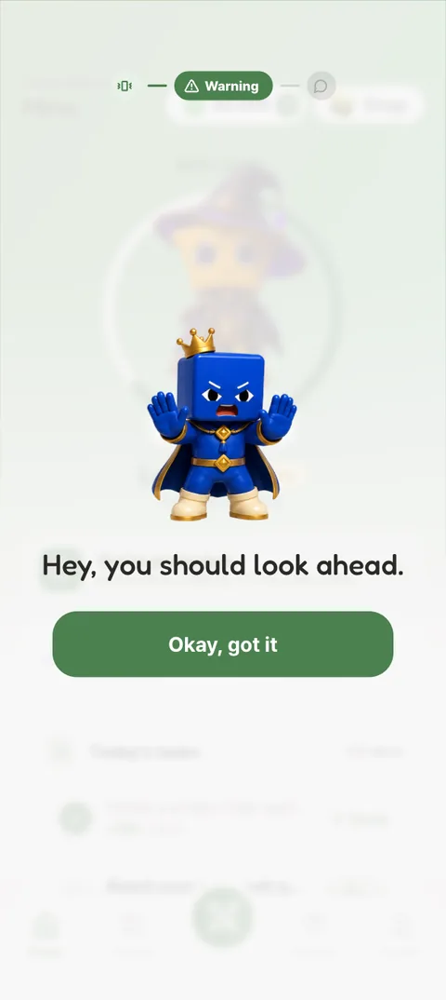
2 · Card. Only if the risk is still there two seconds later. One action, no competing button.3 · Message. The character speaks. Each ignored round makes the tone firmer. The app stays usable underneath.
Alternatives, still switchable in the prototype
I built seven warning layouts (Spotlight, Card, Frame, Signal, Strip, Sheet and Banner) and two narrators so they could be compared live on a phone. Spotlight with King Cubix is the default.
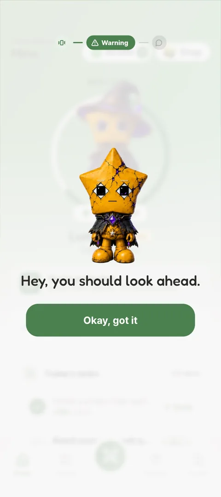
Narrator: buddy. The child's own Lumi delivers the warning. Kept as an option.Narrator: King Cubix. The default since 2 September.
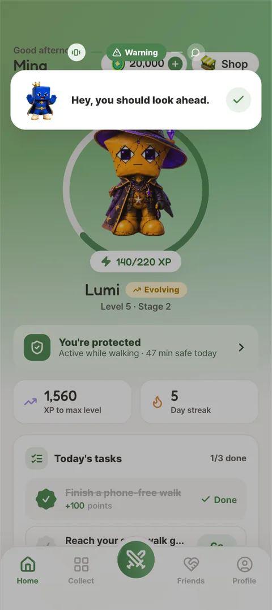
Layout: Banner. The lightest of the seven layouts. It leaves the screen almost untouched.
Still unproven. Whether a child reads and acts on the card inside two seconds, whether three rounds is too many, and how often the buzz fires falsely. These need the field tuning period the spec plans (F-30) and a test with children.
B. Paying for safety, not for taps
Problem
In the first build the stop bonus landed the moment the child pressed the warning's button. A child could learn “trigger, tap, earn”, and the guardian's “stopped when warned” number would be counting button presses.
Constraints
Points are the only currency. The phone can only sense walking, screen state and phone use, so “stopped” has to be defined from those.
Decision
Pay only when four signals hold, and pay more for stopping before any card appears (+50) than after one (+20). Add a 60-second cooldown and a 300-point daily cap (69504ff, 20 July).
Why
Paying “warning, then stop” as much as never needing a warning would teach a child to earn a warning.
Evidence and limits
Found while building the rule engine: the product was paying for a tap and calling it safety. Gap The original flat +20 bonus and the built 50/20 tiers are both still written down in the project files.
All four must hold
Warning shownan intervention was actually on screen
Phone put awayphone use while walking stopped
Screen offthe screen was turned off
Walking safelysafe walking continued afterwards
→
Then the stop is worth
+50stopped at the buzz, before the card appeared
+20stopped after the card or message
0within 60 s of the last paid stop, or past 300 a day. Still logged for the report.
From SAFE_CONDITIONS in WarningOverlay.jsx and evaluateSafeStop in data.jsx. In the rule engine a bare “Okay, got it” sets none of the four, so it pays nothing. The prototype has no real sensors, so it simulates the four signals after that tap; the production app reads them from the phone.
The tiering is the subtle part. Paying the "warning, then stop" loop as much as never needing a warning would teach a child to earn a warning. The code comment states it plainly: "Never reward the warning→stop loop as much as never needing the warning."
The whole economy, in one table
Behaviour
Reward
Rule
Each full minute of phone-down walking
10 pt
Under one minute earns nothing
Stopping before any warning appears
+50 pt
Verified by four signals
Stopping after the warning
+20 pt
Same verification, lower tier
An accident-free day
+100 pt
Streaks add +300 at 7 days, +700 at 14, an Epic egg at 30
Spend: eggs, XP, outfits
500 / 1,500 pt
Common and Rare eggs; 5 points buy 1 XP
Points pay for everything. XP makes the buddy stronger, and battles (decision E) are where that strength gets used. Gap One version of the requirements checklist says one battle a day; the spec and the code say five.
XP to the next level, as built and as specified
Points turn into XP for the buddy. The built curve is gentler than the spec's formula in the middle levels, so a child reaches the next stage sooner. Gap This difference from the spec is documented but not signed off.
Built (XP_CURVE)Spec formula 100 + (n−1)×50
Show the XP curve as a table
Level step
Built
Spec
1→2
100
100
2→3
120
150
3→4
150
200
4→5
180
250
5→6
220
300
6→7
270
350
7→8
330
400
8→9
400
450
9→10
480
500
Total
2,250
2,700
Built steps from XP_CURVE_DEFAULTS in data.jsx; spec formula from appendix A-3.1. Maximum level is 10 in both.
Two earlier changes kept the economy legible. A second invented currency ("coins") was folded into points to match the spec (a06fc2c, 30 June). And gold was reserved for points and XP alone. On 1 September the buddy's Add-XP button went through thirteen versions in one day, from solid gold to outline to no colour, and ended as a green fill, because "the buddy's individual color (e.g. Munch's orange) could clash" (ef32279).
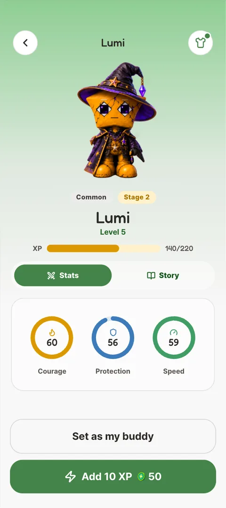
Gold means points. Gold appears only on the XP bar and the cost. The action is green.
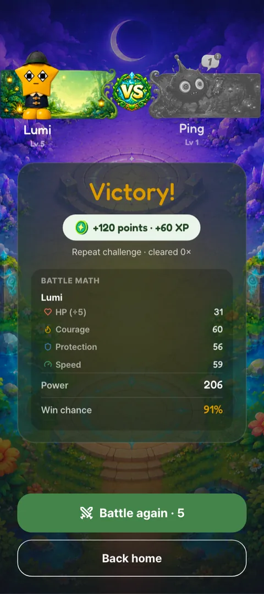
What points are for. A first win against a villain pays 120 points and 60 XP.
Still unproven. The point values are guesses that the code makes server-configurable on purpose. Whether children notice the 50/20 difference, and whether it changes behaviour, needs data.
C. Giving parents confidence without surveillance
Problem
A guardian wants to know whether their child is getting safer, and to hear at once if something serious happens. A report that shows too much becomes tracking, a feed where every row looks alike buries the alert that matters, and the first family model could not hold the adults who actually share a school run.
Constraints
No location tracking and no reading of messages (F-05, F-06 excluded). Fall detection, like walking detection, can be wrong.
Decision
A fixed, short list of what guardians see, kept in one place in the code and published on the website. Urgent alerts styled apart from every other row. The child answers a possible fall before anyone is told. Guardian groups instead of a two-parent family.
Why
A narrow report that guardians can read in full is easier to trust than a dashboard, and an urgent alert only works if it survives a glance.
Evidence and limits
Three problems, each found by running the prototype's own flows and recorded in commits (below). Gap No guardian has used the report or the alerts in a test.
The urgent alert looked like every other row."An impact alert — a possible fall, no response for twenty seconds — read exactly like a scroll warning three rows down, and its message was clipped at 'please check right a...'." The child's mascot on each row "blunted the one signal that had to survive a glance." Urgent rows now get a red rule and title and a call link in the row itself, and the tab shows an unread count (ce71daa, 21 September).
The family model couldn't hold real families. In July, a second parent had to re-scan the child's phone, which unlinked the first device. Two equal parents fixed that (791ef69). By September the two-parent family was the limit: "The people who actually share a school run — an aunt, a grandparent, a neighbour on Tuesdays — could not be expressed at all." Groups replaced it. A guardian can belong to several groups, joins by QR and needs an admin's approval. The child's phone is never touched (ef672b4). The Korean label is 그룹, not 가족, because the people in one are often not a family.
The fall check asks the child first. Impact detection is a guess, so the child sees "Are you okay?" with a 20-second countdown before anyone is told. "I'm okay" ends it with no alert.
Model drawn from commit 791ef69 (14 Jul) and the GROUPS comment in data.jsx. Group names are the prototype's sample data.
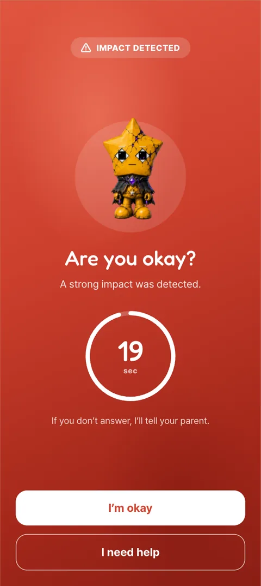
Child first. The child can cancel before a parent is alerted.Urgent stands apart. Severity carries the row; the call is one tap away.
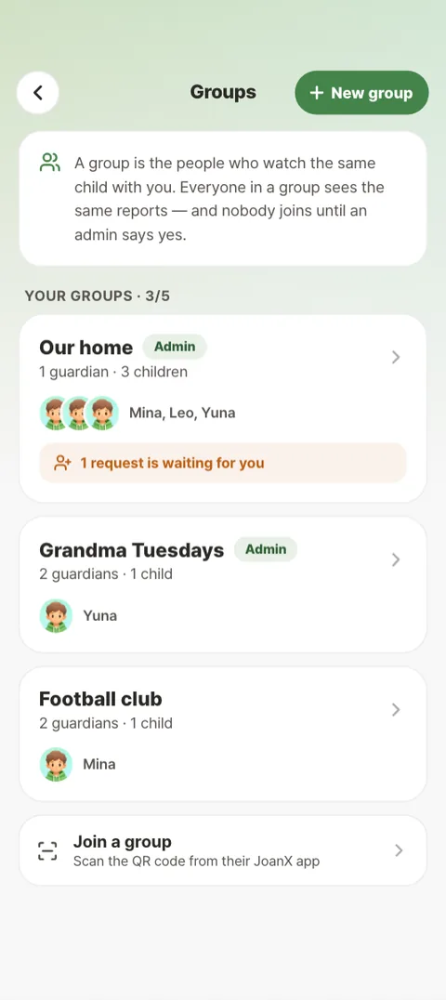
Groups, not one family. "Grandma Tuesdays" is the case the old model couldn't express.Behaviour, not place. The report counts stops and ignored warnings against last week.
Still unproven. Whether guardians find a behaviour-only report enough, whether they trust a list they can't verify, and how often fall detection fires falsely. None of it has been put in front of a guardian.
D. Saying only what the product does
Problem
The website and store copy had drifted ahead of the product. For a safety app, one false promise undoes the trust the privacy list is meant to build.
Constraints
The copy exists in English, Korean and, on the website, Mongolian. What the product does is set by the spec and the code, not by the copy.
Decision
Audit every promise on the website and store listing against the running prototype, and rewrite anything the build doesn't do.
Why
A guardian deciding whether to install a safety app is mostly deciding whether to believe it.
Evidence and limits
The audit (25 September), a correction to the privacy list (18 September) and a copy pass on “look up” (1 October), all in commits. Gap Some help text inside the app still contradicts the build (below).
The audit found seven kinds of false promise: "no location data at all, a single buzz that never repeats, pairing by scanning a code, groups with no codes, points that unlock villains, reports measured against the child's first week, and a privacy list shown on the child's profile." Each line was rewritten to match the build in English and Korean (e4e1db6).
The privacy list itself had a row that was never true: "The 'Which app types are blocked' row was never true of the shipped app: blocking only exists in Lite mode." It became "Whether protection is on", and "Which apps you use" moved to the list nobody sees (9671f64). Finally, the website said "look up" throughout, which implies the phone can tell where a child is looking. It can't; it senses walking and screen use. The copy now says "put the phone away" (1a29014).
Still inconsistent in the prototype. The audit covered the website and store copy, not every screen in the app. Three contradictions remain inside the app: the child's help screen still answers “Why did my screen lock?” with “JoanX locks the screen…”; a guardian FAQ says location is used in Smart mode; and Lite mode, which the spec excludes, can still be chosen in settings and does show a full-screen block. The default mode, Smart, never locks. These are open work, listed in chapter 10.
E. A game world built from the phone's own habits
Problem
The child needs something worth spending points on, but a battle game is the most absorbing screen in the app. Built carelessly, the reward for looking away from the phone becomes the next reason to stare at it, possibly mid-stride.
Constraints
The spec sets five battles a day against a ladder of villains (A-8). The client owns the characters and approves villain names, stories and art. No PvP, no chat, no paid items (A-11).
Decision
Make each villain one of the phone's own habits, close battles while the child is walking, and show inside the fight that safe walking is what wins.
Why
The game should repeat the product's message, not compete with it.
Evidence and limits
The walking rule and its reason are written into the code (canChallenge); the battle sequence was reworked across six commits in July and August. Gap Whether children read the villains as habits is untested.
Three choices keep the game on the product's side:
The villains are the phone's habits. Each of the ten villains on the road stands for one way a phone holds attention, and its battle ability works the same way. Ping is notifications, "the phone that never stops asking to be checked," and its ability means you lose the first move because a glance is all it needs. The ladder climbs from there to the final boss, Vilord: "the moment the phone stops being a tool and starts being in charge."
Battles close while the child walks. The rule sits first among the gates, ahead of locked villains or tries left: "A battle is the most absorbing screen in the app, so it is the LAST thing that may open mid-stride." The copy already promised that battles pause while walking; this rule makes the sentence true (F-19, canChallenge in data.jsx).
The fight says the product's sentence. The first versus screen lasted 1.8 seconds: VS appeared, a second passed, the result arrived. It became three beats. In the middle one, the buddy's power counts up through the safe-walking bonus, so the link between walking safely and winning is shown "at the one second a child is leaning in" (5ac4c49). The exchange was built as "a contest, not an execution", so the loser still lands blows, and a tap skips ahead.
The ten villains, in road order
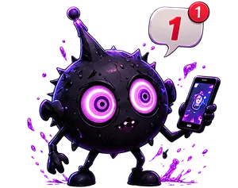
Lv 1 · minion
Ping
Notifications — the phone that never stops asking to be checked
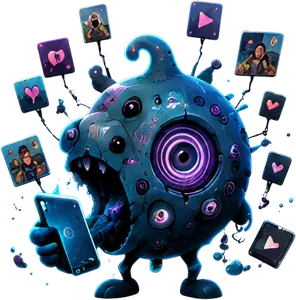
Lv 2 · minion
Temo
Temptation — the promise that the next thing is even better
Lv 3 · minion
Vortex
Scrolling — a feed with no bottom and no door out
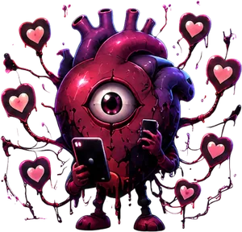
Lv 4 · minion
Moody
Emotion — a mood that swings with every like and comment
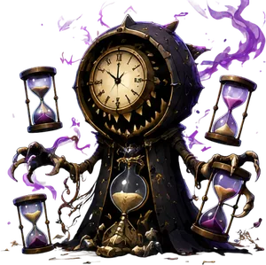
Lv 5 · minion
Chrono
Time — the clock that goes silent the moment you open it
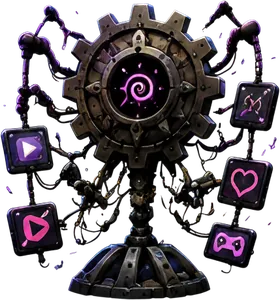
Lv 6 · minion
Hexa
Habit — a loop worn so deep you stop deciding to open it
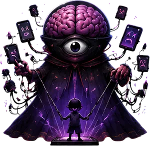
Lv 7 · minion
Shatter
Focus — concentration broken into pieces too small to use
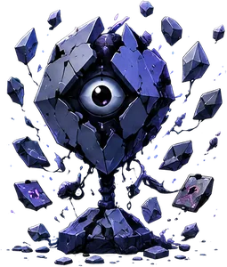
Lv 8 · minion
Twist
Thinking — a mind bent until its own judgement cannot be trusted
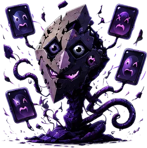
Lv 9 · mid-boss
Puppet
Mind control — strings on every choice you thought was your own
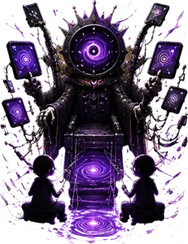
Lv 10 · final boss
Vilord
Total domination — the moment the phone stops being a tool and starts being in charge
Art and descriptions from the build (public/assets/villains/, VILLAINS in data.jsx). Villain names and art go through the client for approval.
How hard each villain is, and why safe walking is what moves a child up the road
Villain power climbs 15 points a level, then jumps for the two bosses. The buddy's power comes from its stats, which grow with XP bought with safe-walking points, and a battle adds a safe-walking bonus to the odds (BATTLE_ODDS). Walking safely is what moves a child up the road.
Show villain power as a table
Level
Villain
Power
1
Ping
145
2
Temo
160
3
Vortex
175
4
Moody
190
5
Chrono
205
6
Hexa
220
7
Shatter
235
8
Twist
250
9
Puppet
300
10
Vilord
320
Power from VILLAINS in data.jsx. Lumi's 206 is the prototype's sample buddy at level 5. Win chance is a roll against the shown odds, between 5% and 95%.
Smaller decisions support these. The villain map uses sticker-style markers, and state is shown by a pulse ring on the current challenger, "never by recolouring the outline" (c985a37). Each villain card shows the tries left today, so the daily limit is visible before the fight, not enforced as a surprise after tapping Start (29a1497). Villains unlock strictly in order, and no villain starts defeated: a new player meets Ping first (9671f64).
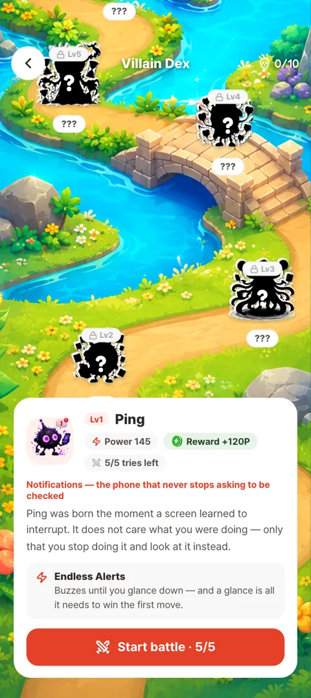
The villain road. Ping's card names the habit it stands for, the reward and the tries left today.
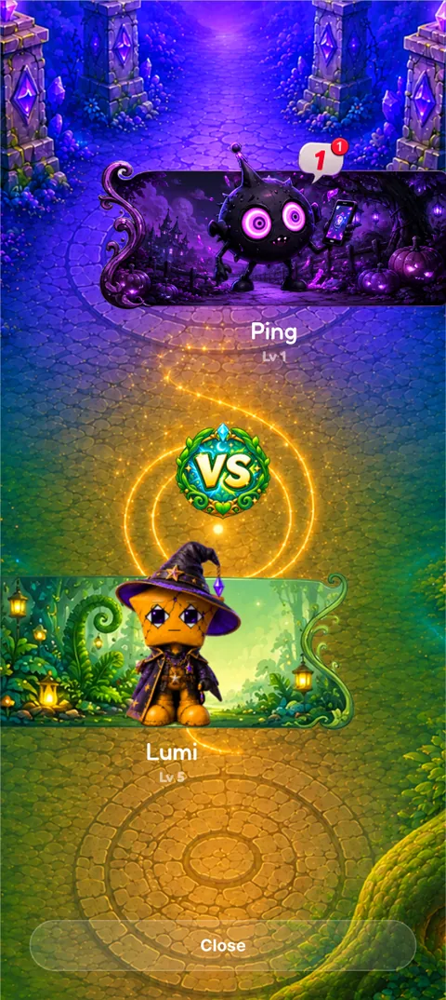
Versus. The buddy's power, including the safe-walking bonus, counts up before the clash.
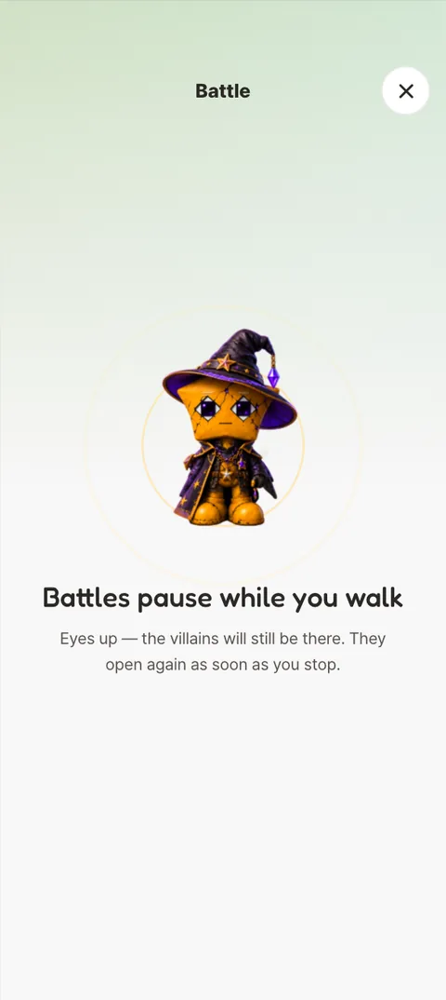
Closed while walking. The most absorbing screen is the one that can't open mid-stride.
The fight, and what a loss still gives
Once the child has stopped walking, a battle is three short steps: pick a fighter, watch the clash, read the result. The result shows the battle math (the stats behind the buddy's power and the win chance), so a loss reads as a close roll rather than an unfair one. Losing still pays 10 points for trying.
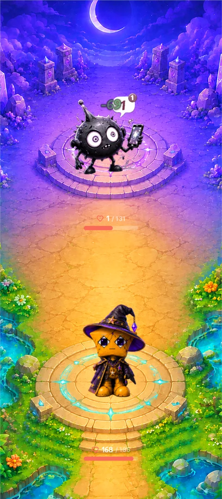
Fight. It plays itself in a few seconds; five tries a day cap it.
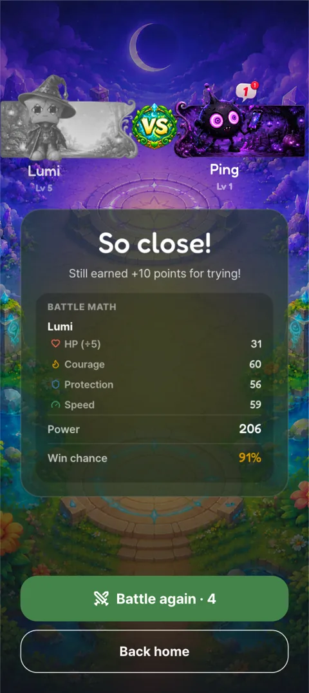
Loss. Even at a 91% win chance it can go wrong, so the math is shown and the try still pays +10.
Still unproven. Whether children read the villains as phone habits or only as monsters, whether the night-time villain art is too dark for the youngest children, and whether five battles of about six seconds each pulls attention back toward the screen. Gap The villain roster exists in three versions across the spec, the checklist and the build; this page uses the build's names.
Chapter 5 · The product
Set-up, rewards and rooms
The decisions above cover the safety moment, rewards, the guardian's view and the game. This chapter covers the rest of the product: how a family gets set up, and what a child spends points on. These screens carried less risk than the safety moment, but most of a child's time in the app is spent in them.
Set-up, guardian: signing in
Only the guardian has an account. The first screen offers three doors, so nobody has to guess which one is theirs: a new account, logging back in, or joining a group someone else already runs. Consent comes before the account, because the guardian agrees on the child's behalf.
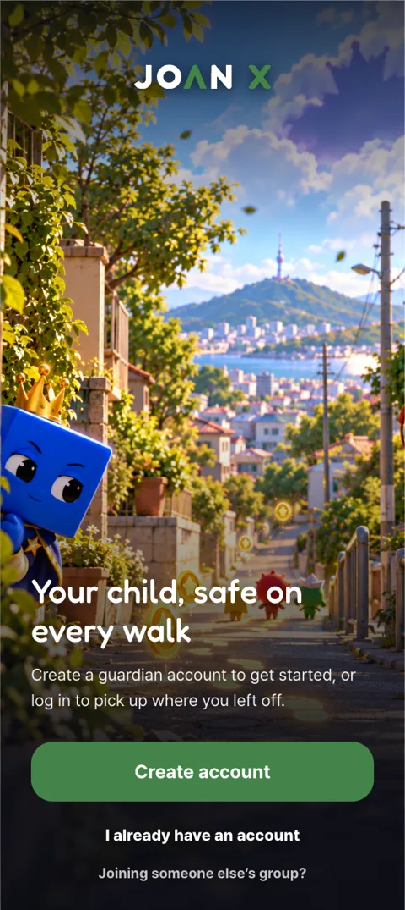
Welcome. Three doors: new, returning, or joining a group.
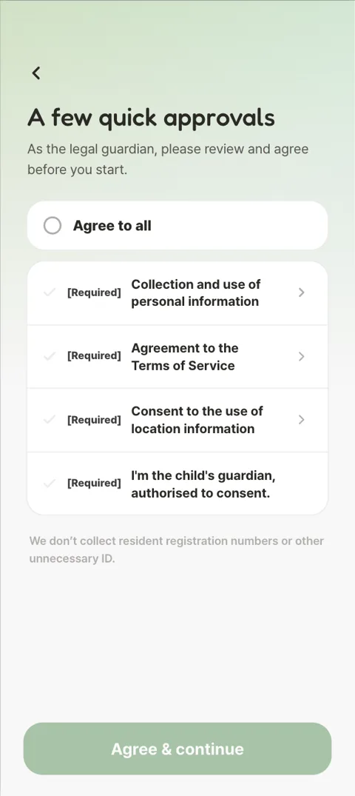
Consent. Four required items, one tap to agree to all, each readable on its own.
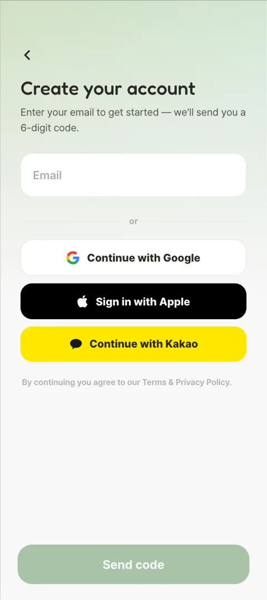
Account. Email with a 6-digit code, or Google, Apple and Kakao, the sign-ins Korean parents already use.
Pairing: the child joins with a code, not a password
A child never makes an account or remembers a password. The guardian's app shows a six-digit code that lasts five minutes; the child types it in (or scans a QR instead), and the two phones are linked. Then King Cubix asks for the four permissions one at a time, each with the reason in a child's words. A refused permission is allowed: protection runs limited and says why, instead of failing.
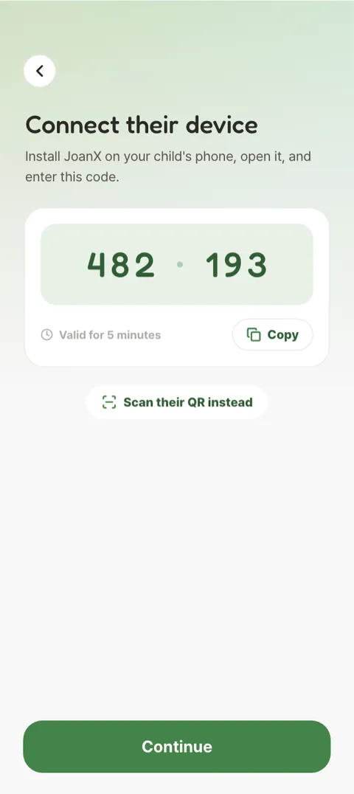
Guardian. Shows a short-lived code.
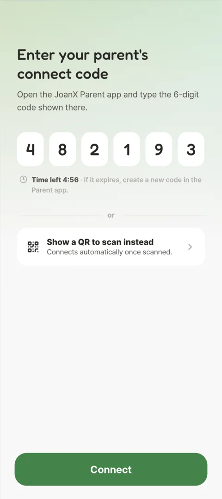
Child. Types the code; the timer shows how long it lasts.
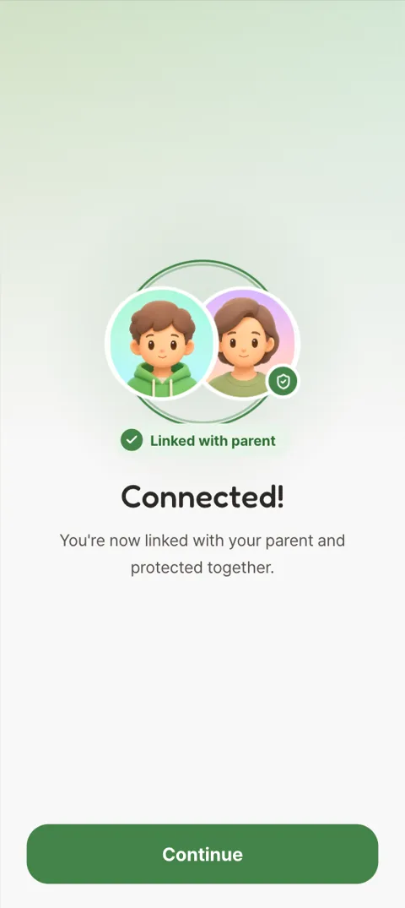
Linked. One clear confirmation, then the first egg.
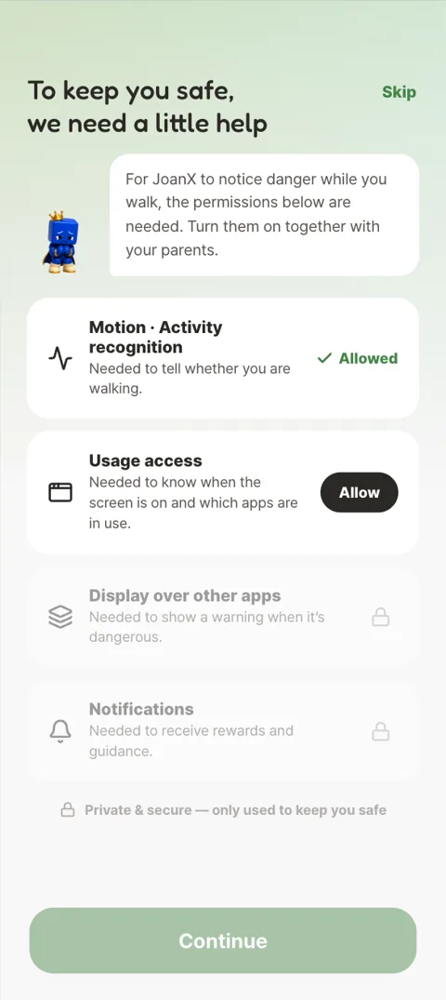
Permissions. One at a time, each with its reason; the rest wait their turn.
Inviting another guardian
The school run is rarely one parent. A guardian can invite others into a group with a QR or a code, and the person joining sees exactly which children they would see before they ask. Nothing is shared until the group's admin accepts.
AThe admin
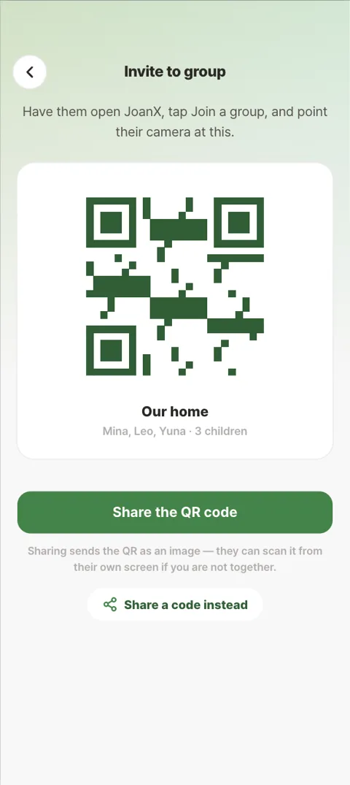
Invite. A QR to scan, or a code to send if they aren't together.
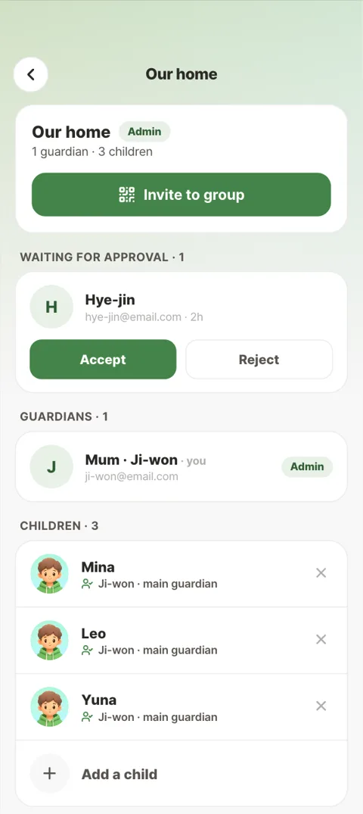
Approve. The request waits at the top of the group, with Accept or Reject.
BThe guardian joining
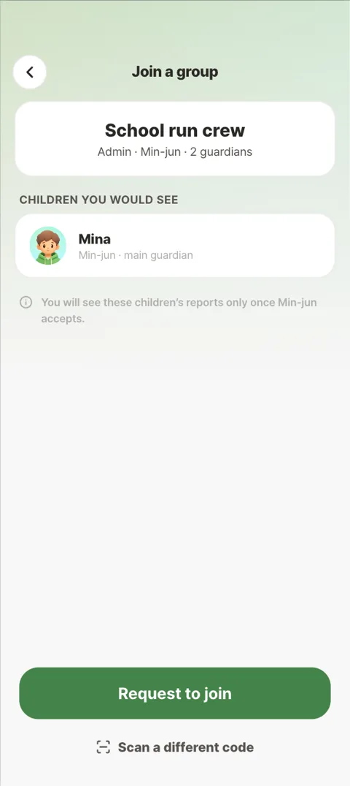
Preview. Sees which children they would see before asking.
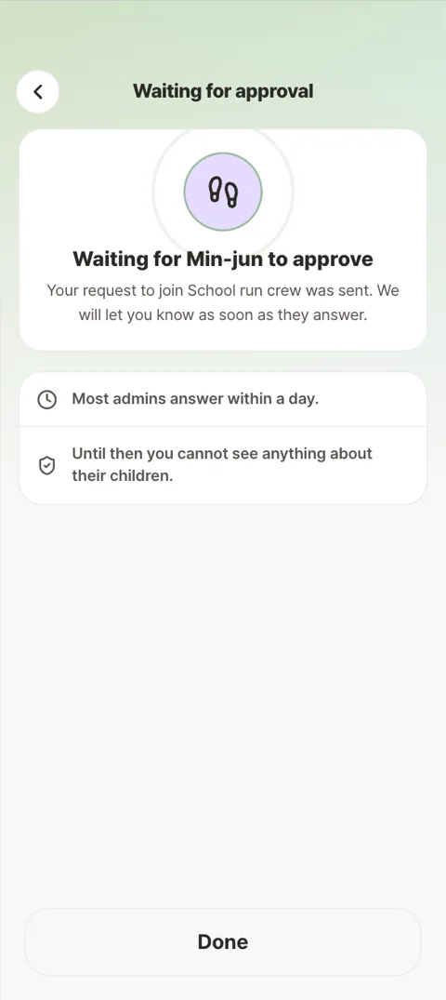
Wait. Sees nothing about the children until accepted.
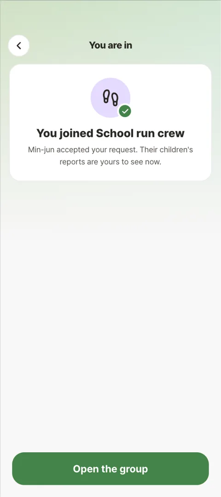
In. Accepted; the children's reports appear.
A guardian can belong to up to five groups. The child's phone is never involved in joining a group.
What a guardian can control
Each child has one page of rules and settings. Its top half answers “is protection working?” (the groups, the device, and every permission the child accepted at setup). Its bottom half holds the choices a guardian can actually make.
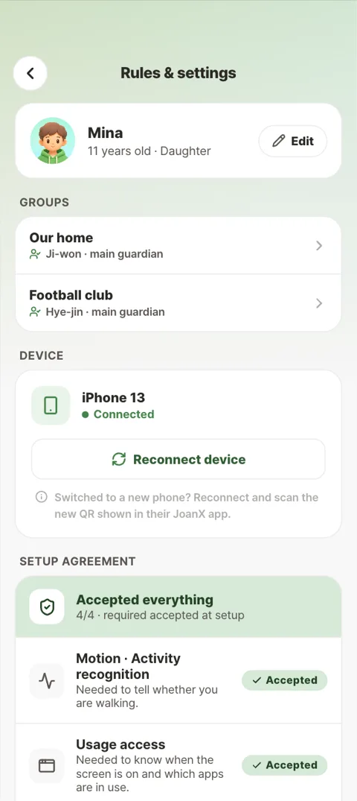
Status. Groups, device, and what the child accepted at setup.
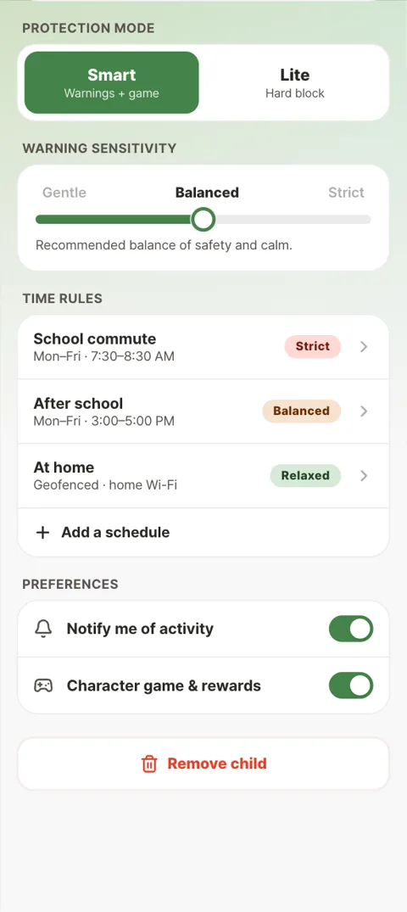
Choices. Mode, sensitivity, time rules, and the game on or off.
Protection modeSmart, the default and the mode in scope: warnings plus the game. Lite (not in this revision): blocks chosen kinds of apps while walking, calls always allowed.
Warning sensitivityGentle, Balanced or Strict, on one slider.
Time rulesStricter for the school commute, calmer at home, as many schedules as a family needs.
Game and rewardsA switch for families who want the warnings without the game.
DeviceReconnect after a new phone, by scanning a new QR.
Remove childAt the bottom, in red, away from everything else.
Gap Lite blocks apps while walking, but the website and the safety moment promise that JoanX never locks the phone. The prototype's code marks Lite as excluded from this revision, yet the settings screen still offers it. Either hide it until it ships, or give it a name and description that don't contradict the promise. The “At home” rule is also described as geofenced, a location claim the product otherwise avoids.
After school: eggs and the shop
Eggs are how a child gets a new buddy. Most are earned by walking safely: clearing every daily mission gives a Common Egg, every weekly mission a Rare Egg, and walking milestones such as 10 km add more. The shop sells the same eggs for points, and an egg already earned shows its price beside it, so a child can see what it was worth.
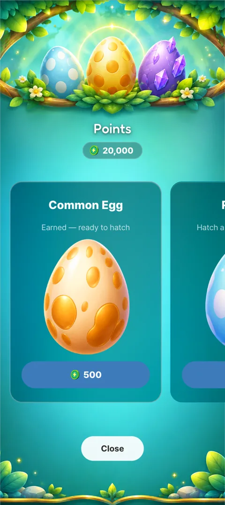
Shop. One egg per card; swipe for Rare and Epic.
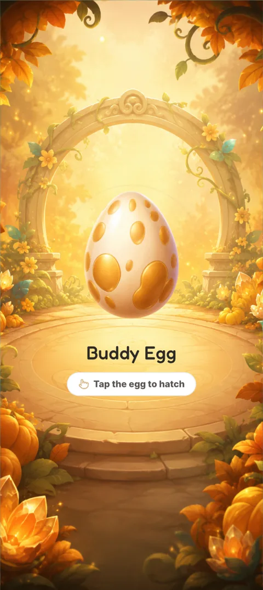
Common Egg. Each egg hatches in its own world; the child taps to hatch it, not the app.
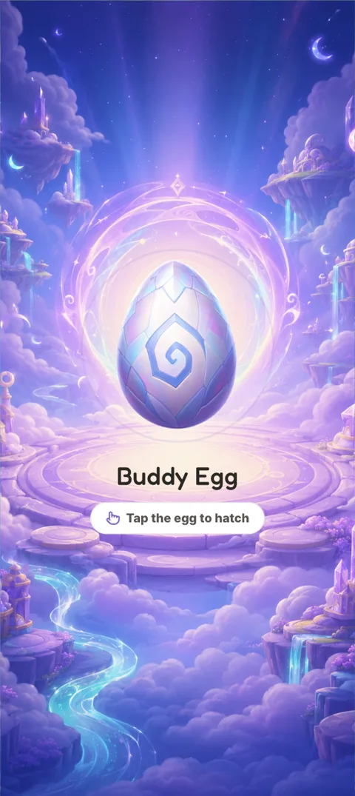
Epic Egg. The rarest egg gets the grandest scene, so rarity is felt before the reveal.
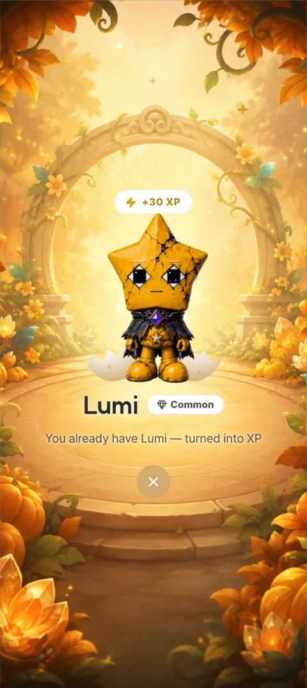
Reveal. A duplicate isn't wasted: it becomes XP for that buddy.
Common Egg500 points · any level
Common 80%Rare 20%
Rare Egg1,500 points · from Lv 5
33%Rare 67%
Epic Eggearned, not sold (3,000 in the prototype as a preview)
Rare 40%Epic 60%
Odds from EGGS in the prototype's data file. A pricier egg shifts the odds rather than guaranteeing a rarer buddy, and only the Epic Egg can hatch an Epic, which keeps the two hidden characters rare. Prices and odds are meant to come from server settings.
Dressing the buddy
Outfits are the most personal thing points can buy, so dressing Lumi got its own screen. Tapping an item puts it on straight away as a try-on. A bar at the bottom names the item and offers Buy or ×, so nothing is paid for by accident (17f290e).
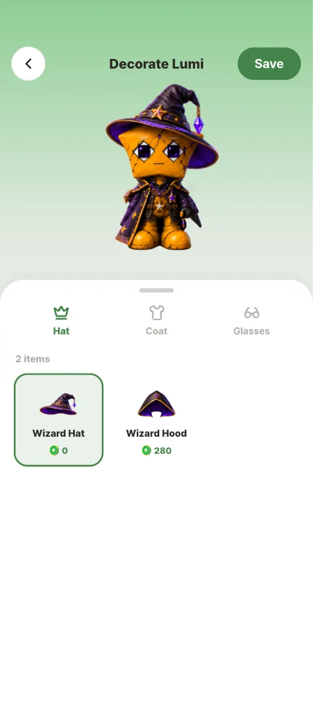
Worn. The default look for stage 2; owned items show 0.
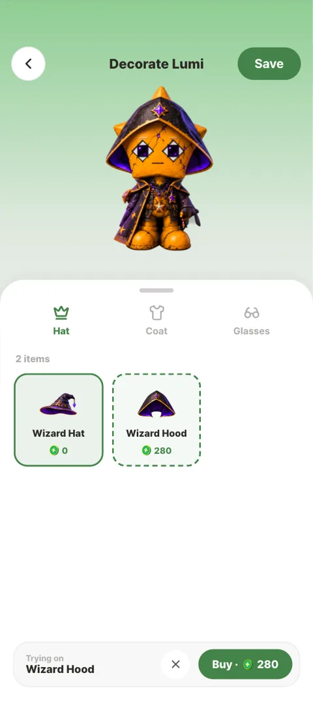
Hat. The hood goes on before anything is paid.
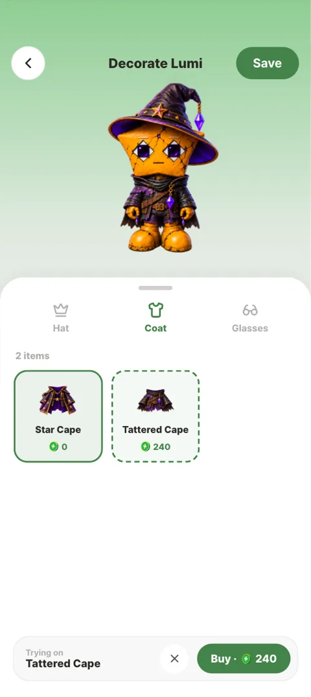
Coat. The dashed outline marks a try-on, not a purchase.
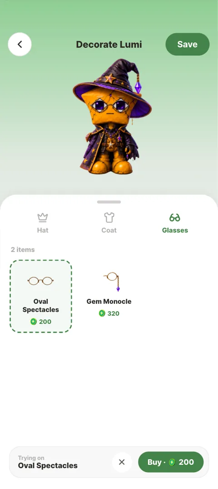
Glasses. The third slot added at stage 2.
How the outfit pictures were made
Before the screen existed, I made the clothes themselves. Lumi isn't built from layers. Each outfit combination is its own complete picture, which I generated with AI and laid out on a Figma board, then the app swaps to the matching picture. An animated, rigged character wasn't in the budget. Whole pictures were, and they look finished on day one.
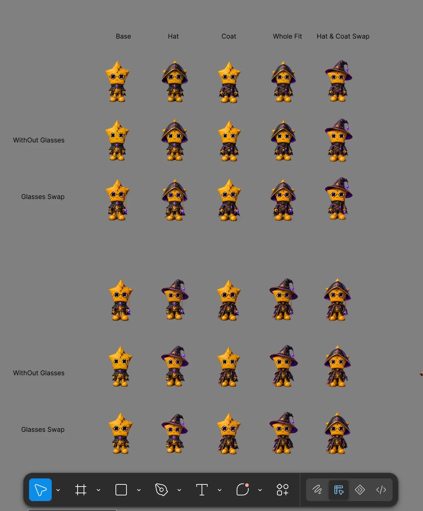
My board for Lumi's stage-2 wardrobe. Each column is a hat-and-coat combination, each row a glasses option, and every cell is a separate generated picture.
41whole pictures in the app: 16 for stage 1, 25 for stage 2
12items they cover, across hat, coat and glasses
1rule for a missing combination: drop the glasses, then the coat, then the hat, until a picture exists
NowSwap the pictureevery new item means generating every combination it can appear in
→
NextRiveone rigged body with items as layers, so outfits can animate on and Lumi can react
The picture count grows with every item: adding one more hat to stage 2 means up to nine new renders (three coat choices times three glasses choices). A rigged character in Rive (or a similar tool) would turn that into one new layer, and add the life a still picture can't: idle breathing, a reaction to a new outfit, a cheer after a safe walk.
Designing the Dream Room
Buddies live in rooms, and the profile friends visit opens on the Dream Room. I designed it in Figma in three steps: an empty room as the base, decorated previews to find where pieces belong, then the pieces themselves as separate cut-out items the child places.
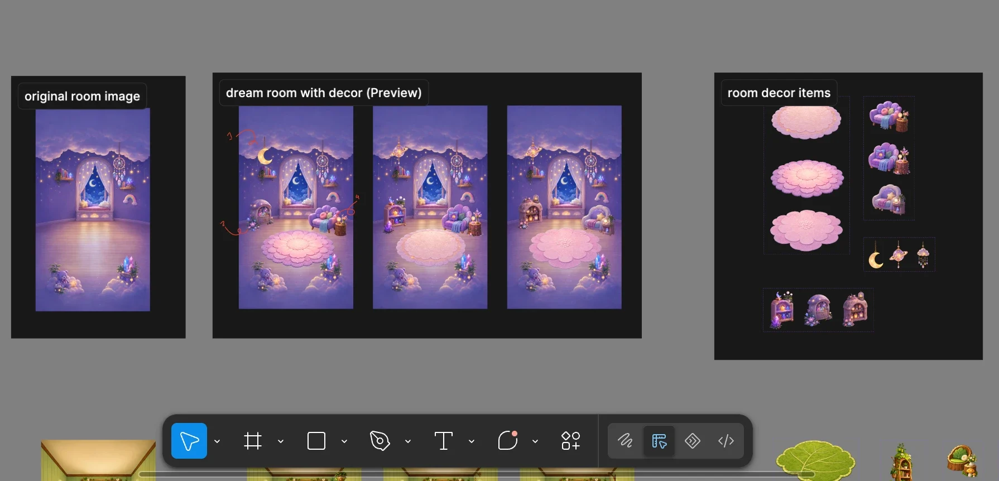
My Figma board. Left, the empty room. Middle, three decorated previews; the first is marked 1–4 for the four spots a piece can fill. Right, the candidate items, three per spot.
1Empty room first. The background carries the mood on its own (window, clouds, shelves), so a room with nothing bought still looks finished.
2Preview, then mark the spots. Decorated versions showed where pieces read well: an ornament hanging top-left, a cabinet on the left wall, an armchair on the right, a rug on the floor.
3One piece per spot, picked from three. Each spot became its own catalogue slot with its own button, so all four can be in the room at once. The flower rug, flower armchair, crescent moon and mushroom cabinet shipped (79300a8).
Place. Drag a piece out of the sheet; it stays outlined in green with a keep or remove bubble until confirmed.Show. The finished room is the profile friends visit; the book below it is the guestbook.Read. Tapping the book opens it: notes friends left on a visit, checked by a moderation filter before they appear.
Gap Pieces don't layer around the buddy yet: dropped at its default spot, the armchair or rug covers Lumi, so these were dragged clear by hand. Depth sorting by floor position would fix it.
Chapter 6 · The product
The website
JoanX is two things a family meets: the apps, and the website that decides whether the apps get installed at all. The website had its own brief and its own design problem.
A guardian, a phone, ninety seconds
The brief (16 September) names the primary reader: a guardian of a 6 to 13-year-old, on a phone, deciding in about ninety seconds whether JoanX is worth installing. They arrive suspicious of two things: that it is another blocker their child will defeat, and that it will spy. (The client, partners and pilot schools are secondary readers.) The page has one job: to move that guardian from “another parental-control app” to “this is a game my child would keep, and it doesn't watch them.”
From a one-day AI draft to a designed page
V1 was generated by AI in one day from prompts (16 September), and it is kept as a baseline. V2 is my design: I stripped the page back to a plain base on 25 September and rebuilt it section by section over the following week, using AI to build what I directed. Both are still live: open either below, or use the switch on the site to move between them. Shown here in Korean, the main market; each site has its own language switch.
V1 · AI, one day from prompts
Fast and competent, but generic: split hero, phone mockup, “NEW” pill, check-mark bullets, a stat strip.Open V1 (opens in a new tab)
V2 · My design, built with AI
The product's own world, one sentence and one action. A week of design decisions, with sections ordered by the questions a parent asks.Open V2 (opens in a new tab)
A page ordered by a parent's questions
The V2 rebuild started by taking everything away. The first step kept the same sections and copy but “no gradients, shadows, icon tiles, pills, tilted phones or mascot”, and marked each section so it could be redesigned one at a time (b4bb14b). The next made “each section's label the parent's question” and its heading the plain answer, in the order a parent asks (a2d48d2). Only then did the visual design begin.
01 · Safety moment
What happens if my child uses the phone while walking?
A buzz first. A message only if they keep going.
02 · Why it works
Why would my child go along with it?
Safe walks earn points in a game they care about, so no nagging.
03 · Privacy
What can I see, and what can't I?
The list of what a guardian sees and what stays with the child.
04 · Parents
What do I get?
The weekly report, the fall alert, groups.
05 · Story
What is the game actually like?
The onboarding story, card by card.
06 · Get JoanX
How do I start?
One download button, with the cast stepping aside.
Screens from the live V2 page, in Korean. The questions are paraphrased from the section labels and headings.
Carrying the app's brand onto the web
The product's own worldV2 opens on the game's illustrated banner. The phone mockup left the hero on day one of the rebuild (9005a42).The cast, used sparinglyKing Cubix answers the FAQ; the buddies and villains frame the final download. Characters appear where they mean something.Motion that tells the storyFlat like the apps. Motion is kept for a few scroll moments, like this green sweep before the privacy promise.
#4B814F brand green
navy on the night sky
EN · KO · MNthree languages
light and dark
One green, used the app's wayGreen carries sections and actions. Over the banner's night sky the nav turned navy, because green disappeared on it (ab38212). Art made for white was adapted for dark rather than hidden (73354ef).
Adding motion, scroll by scroll
The apps are flat, so the website's motion had to earn its place: it is used only where it tells the story. I directed it one section at a time and built it with AI, without an animation library. Each moment is a section that pins in place while you scroll, and the scroll position drives every step. The reader sets the speed, can stop at any point, and can scroll back to replay it.
The privacy takeover, as a timeline
The biggest moment runs over about nine screens of scrolling. Each phase has its own slice of the pin, and the timing was tuned by scrolling through it again and again: the circle first grew from the centre, then became an arc sweeping in from the right (2297d50), the word reveal was smoothed (48ec894), and the ending was changed to turn white so the page continues without a jump (7c29cda).
Hold
Cards slide in
Green arc sweeps
Line 1, word by word
Lifts away
Line 2
Hold, turns white
0%50%100% of the pinned scroll
Cards slide in. The row of what a guardian sees moves left as you scroll.The arc sweeps. One huge circle, its edge a gentle curve, slides over the page.Words arrive. Each word starts before the last has landed, like a wave.Hands over. Green turns to paper with green words, so the next section follows with no colour break.
Every moving moment on the page, and the rules they share
HeroThe banner stays still; a rounded dome of the next section rises over its bottom edge as you scroll.cd28c41
Safety momentA slow section whose lines reveal one at a time, so the buzz-then-message sequence is read in order.1bd9229
Privacy takeoverThe pinned scene above: a hold, the cards, the green sweep, two statements.2297d50
Why it worksPinned: flips to night green, then brings the three points in one by one.1bd9229
Get JoanXThe cast steps aside to reveal the download, once the section nearly fills the screen.949ae90
NavHides when you scroll down, comes back when you scroll up; never while a menu or the QR card is open.1bd9229
Rules that applied to all of them: phones get a simpler version (the privacy cards stack and skip the sideways slide), sections re-measure when the font loads or the language changes, and with reduce motion turned on in the device settings the pins and reveals switch off and everything is simply shown.
Directing the banner art with AI
The hero picture wasn't drawn by hand or bought as stock. I collected the product's own art onto one board, arranged it the way I wanted the scene to read, and used ChatGPT's image generation to turn it into a single wide banner, refining the scene with prompts until it matched the board. The banner went into the site on 30 September (0170333).
1Pick from the product's own art
Villain mapthe world: night sky, crystals, waterfalls, winding path
The two childrenthe leads, in the moon overalls
Fighterflying above, staff raised
Fighterflying above, chain and crystal
Common eggthe first reward
Epic eggthe rare reward
2Arrange it on a board, generate with ChatGPT
The full working board in Figma: the references placed around the 2168 × 1260 frame, a second version below it, and the image tools used to refine it.
3The result
The final banner, full width (4336 × 2520 source).
What carried over
The two children stand at the left and right edges, which leaves the middle of the picture open for the headline and the button
The two fighters fly in the upper corners, on the children's side
The villain map gave the palette and the world: a night sky turning pink at the horizon, crystals, waterfalls, cliffs
The eggs sit in the bottom corners, the first thing the game gives a child
The magic circle stays at the centre as the ground the download button sits on
The comparison is between the board and the final banner; the intermediate generations aren't shown.
Making the hero work on a phone
The banner is wide; most guardians open the page on a tall phone. Every simple crop failed, so the fix was found by trying and rejecting, live.
✕Flat blue band between text and art
✕Hero shorter than the screen
✕Centred crop cut characters in half
✕Zoomed crop on one child
✕Slow pan across the picture
✕Blurred art behind (pink clashed with navy)
✓Shipped: the whole scene sharp at the bottom, its sky extended upward from the art's own top edge, column by column (fe8e2c9)
As shipped, in Korean.
The rejected versions were reviewed live and recorded in my session notes, not in commits, so they aren't shown here.
What's still open on the site
The copy audit in decision D happened on this site, so its promises now match the app in all three languages. Two things are still out of line: the website and the apps use different typefaces, and the footer still says JoanX hasn't launched.
Chapter 7 · How it was made
Process and iteration
The real process was not linear. It moved in bursts, and most iteration happened by building alternatives side by side and switching between them live in the prototype's Tweaks panel, a hidden settings drawer that swaps one design for another on the running phone. The panel holds 53 groups of switches, most of them design alternatives. Some sets were later cut back; the battle layouts, for example, were pruned to one.
Options per area still switchable in the prototype today, counted from App.jsx and the variant files. All but the child home are in the Tweaks panel; home layouts are chosen by a URL setting.
One screen, start to finish: the child's home
The child's home is the screen a child sees most, so it shows the whole process in one place. The first version was generated with AI on day one; over four months I rebuilt nearly every part of it.
Five builds, first draft to final
5 June
The AI draft
Three colours, a screen lock, two currencies.
8 June
Colour and type
Ocean-blue actions; the goal card tinted to the buddy.
30 June
Matched to the spec
One currency, no lock, battle in the centre.
21 July
One green
Brand green, an XP ring, today's tasks.
October
Final
Finished icons and the client's Lumi.
The middle three are real builds from git history, run and captured. Each had its own default buddy.
Teaching the colours. Most of the colour work wasn't one fix. It was the same correction made until it stuck. Each time a generated screen got colour wrong, I wrote the fix down as a rule the AI reads before it builds anything (chapter 8): green is the brand, never the character; gold only for points and XP; no glows. Later screens started from those rules instead of repeating the first draft's mistakes.
Dates from the git history of the home screen files. Numbers on every screen are sample data.
The villain map, from nothing to a road
The battle screen changed even more than the home. It went from fighting other players to a road of villains, each one a phone habit (decision E).
5 June
No villains
Just “Find a match”: fights against other players, which the spec rules out.
8 July
A list
The spec's ten villains in a plain list, drawn with reused buddy art.
22 July
A road
The first road map. Villains still stood for road dangers.
Warning layout options, fall alert, outfits, client art line
1–8 Sep
25
Add-XP button, King Cubix narrator, room decorating, 17-cut onboarding story
15–21 Sep
16
Guardian groups, store listing, privacy list fix, urgent alerts
25 Sep
43
Website: copy audit, rebuilt around parents' questions
28 Sep–2 Oct
35
Case study, responsive website, copy honesty pass, design system sync
Visual language: flat, one green
Three rules emerged from repeated fixes and are now written into the design system:
Flat. Glows were removed from cards (8 June), rings (13 July) and every button (16 July). The code comment explains: "no drop-shadow/glow on any button (reads as 'AI design')."
One brand green. The app used to tint its background with the active buddy's colour. On 21 July it was locked to green: "The buddy is art; switching it … no longer repaints the app." The brand had moved from ocean to pink to green over six weeks before this.
Gold only for points. See decision B.
8 JunOcean CTA1fcaa66
7 JulPink parent brandbaa526c
13 JulGreen onboarding676ef3e
21 JulWhole app locked to green38d7c4e
2 OctOne brand green in the design system66708c6
The brand colour, from the git history. Swatches show the actual hex values used at each step.
Small rules that protect a child's choices
A child should never lose a choice, or spend points, by accident.
24 August
Try before you buy
Tapping an outfit tries it on; Buy is a separate step.
7 September
Closes only from X
No swipe-to-close, so a stray touch can't lose a choice.
7 September
The bubble stays
Keep or remove survives the sheet closing; closing isn't undo.
Onboarding as a story
The onboarding story sets up the game's world before the child sees a single screen of it. In the first cuts the villains are winning: children walk with their eyes on their phones while the creatures gather. At cut 7 the story turns, the buddies appear, and it ends on the child's first egg. The first version was one story cut and two value slides sharing a placeholder image; Myt H Mon illustrated the 17 cuts that replaced it (4 September). Earlier passes put text over the picture and "both covered the part of the frame the cut was about," so the words moved below the art. An eleven-segment progress bar became one fill because the segments "read as a row of dashes."
Cut 1. The problem, shown from the child's world.Cut 5. The villains gather, each holding a phone.Cut 7. The tone turns from villains winning to the buddies helping.Cut 16. The story ends on the child's first egg.
Accessibility and language
Every screen is in English and Korean, mostly through one translation helper. The stylesheet switches animations off when the device asks for reduced motion. The warning copy was rewritten for a child's reading level in both languages (see decision A). Gap No contrast audit or screen-reader test is recorded. A child accessibility settings section was explored and is hidden until its direction is decided.
Chapter 8 · How it was made
Design system and AI
Two apps, one designer and an AI pair programmer make a fast team, and a risky one. The AI writes the code it's asked for quickly, but left alone it drifts toward a generic look: glows, sparkles, pills on everything. Keeping the product consistent meant treating the design system as two things. It is a set of tokens and components the code is built from, and a set of written rules the AI reads before it builds anything.
Three tiers, one source
Every value flows through three tiers, and a token's name says which tier it is. Product code only uses the semantic or component tier, never a raw colour. That rule is why the brand could move from ocean to pink to green without editing screen by screen.
Primitive
--color-base-ocean-50#447aaf
Raw paint. Never used in product code.
→
Semantic
--primarywhat the paint is for
Role aliases in CSS: --fg1, --space-md, --r-xl.
→
Component
THEME.primarymirrored for inline styles
Used by <Button variant="primary"> and every screen.
One colour traced through the tiers, from color-system.css to tripme-tokens.css to THEME in primitives.jsx.
A living reference, inside the prototype
The system is documented as a page in the prototype itself: 20 sections, from colour and type to fields and sheets, characters, motion and sound, with live components to try and code to copy. The written spec (DESIGN-SYSTEM.md) and colour galleries sit beside it. Because the page renders the real components, a developer sees exactly what ships.
When a generated screen looked wrong, I didn't just fix that screen. I named what was wrong, wrote the fix down as a short rule with its reason, and saved it where the AI reads it at the start of every session. Seventeen design and copy rules were saved this way. Many also went into the code as comments, so anyone reading the component sees the reason too.
The loop, as it ran through the project. The saved rules live in the AI's session memory, outside the repository; the code comments and commits are in it.
What looked wrong
The rule
Where it shows
Glows under buttons and cards
Flat: a card is a hairline ring, a button is a fill
Button primitive, 16 Jul (2b2c3f6). The code comment: “reads as 'AI design'”
The app repainted itself in the buddy's colour
Green is the brand, never the character
21 Jul (38d7c4e): “The buddy is art; switching it … no longer repaints the app.”
Gold used for any “nice” button
Gold means points and XP only
Add-XP button, 1 Sep (ef32279); a code comment cites the saved rule by name
Price lists that floated and bobbed
Motion only on what the child touched
13 Jul (2aa2e6e): the egg list “sits still”
Sparkles, faded icon watermarks, dotted filler
No decoration for its own sake
Parent report variants: a comment rules out “the tropes that read as 'AI design'”
A lone filled pill for a small action
Small actions are plain icon + text, like Skip
Saved as a rule
Centred content on an otherwise empty screen
A hero, with actions anchored at the bottom
Saved as a rule
Copy that said “look up”
Describe what the app senses, not gaze
Website and app copy, 1 Oct (1a29014)
The website shows this way of working most clearly: an AI draft and my design are both still live (see The website, chapter 6).
Keeping the reference honest
A reference the AI trusts has to stay true. On 2 October the design system page was checked line by line against the code. It had last been updated on 21 August, 175 commits earlier, and it had drifted:
It still documented glow shadows for buttons that no longer used them, and one demo used a colour token that didn't exist.
It described an input with an icon option that had been removed, and a label style that had become a floating label.
It said the child app's accent was ocean, when both apps had used one brand green since July.
It counted the tab bars wrong and claimed the translation helper could fill in numbers, which it can't.
It had no section at all for fields and bottom sheets, the narrator, the villains or sound.
Everything was corrected in one pass, and the missing sections were added (66708c6). The audit also turned up things in the app itself to fix later, such as an icon whose image file is missing. The lesson: docs drift as fast as the product moves. The rules the AI follows are only as good as the reference they point to.
Chapter 9 · Results
Results and evidence
Two kinds of result are easy to blur here: what the design changed in the product, and what the product changes for children. This chapter keeps them apart. The first is documented in the code and the commits. The second hasn't been measured.
What the design changed in the product
Handed over
Design and prototype→Production apps
The development team built and launched the product using this design and the working prototype as its reference. The prototype's rules, screens and copy are the design's specification; I haven't checked how closely production follows them.
Warning message
Gone in 1.5 s→Holds while the risk lasts
A child can read it at a walking glance; the safe action never disappears (decision A).
Stop reward
Paid on any tap→4 signals required
Plus a 60 s cooldown and a 300-point daily cap on stop bonuses, which closes the obvious farming loop (decision B). Whether children find another is untested.
Fall alert
Same as every row→Red row + call button
The one alert that matters survives a glance (decision C).
Who can help
2 parents max→Groups
A guardian can belong to up to 5 groups, so grandparents and neighbours can join; the child's phone is never touched (decision C).
Website promises
7 kinds of untrue claim→Rewritten
Each now matches the app, in English and Korean. One line is still to fix: the footer says JoanX hasn't launched (decision D).
Battles mid-walk
Possible→Closed
The most absorbing screen can't open while the child is walking (decision E).
Design reference
175 commits behind→In sync
The design system page matches the shipped components again (chapter 8).
What is proven, and what isn't yet
Launching shows the design could be built and shipped. It doesn't show that children behave differently, that guardians trust the report, or that the warnings are safe to rely on.
Category
What exists
Status
Designed
Both apps (about 50 screens, plus their layout variants), the rule engine for warnings and rewards, a design system page, English and Korean, a marketing site
Confirmed
Built and launched
The production apps, built by the development team from this design. No launch date, store listing or usage data is available to me, and the website footer still says “not launched”.
Reported
Checked against the spec
A requirement-by-requirement checklist. The documents claim every in-scope item is built, but the two versions of the checklist disagree on three items.
Conflicting
Checked against the build
Website and store copy audited against the prototype; the privacy list corrected
Confirmed
Tested with people
None recorded. No usability sessions, interviews or observations have been done.
Not done
Measured
No post-launch data yet. Every number on the screens here is prototype sample data.
Need data
Expected, unproven
Fewer risky moments over weeks; children accepting warnings more often; parents trusting the narrow report
Hypothesis
Chapter 10 · Results
Reflection and next steps
What I'd keep
Rules before screens. The hardest problems (paying for taps, the vanishing message) only appeared once the spec ran as real logic.
Write the reason next to the change. Most decisions in this case study can be quoted because the reason went into the commit or the code.
Write taste down. Working with an AI went fastest when a correction became a saved rule with a reason, not a one-off fix.
Audit the promise. For a safety product, checking the copy against the build mattered as much as any layout.
What I'd do differently
Fewer variants, decided sooner. Some areas still have 10 to 24 alternatives. That helped the client choose live, but it also left old options in the code.
Put children in front of it earlier. Every UX claim here is reasoned; none is tested.
One source of truth for docs. Several documents now disagree with the build: villain names, battles per day, bonus values, guardian sign-in and child age.
With more time, what I'd fix
These are real inconsistencies found while building and auditing the product, not hypotheticals. Brand alignment comes first, because it's the most visible to parents and the one the AI drifts on most easily.
Priority · one brand, everywhere
Now
Aa 가web · Noto Sans KR
Aa 가app · Pretendard
→
Next
Aa 가one family
One typeface, app and web
A parent moving from the site to the app shouldn't hear a change of voice.
Now
#E00477 still in 2 docs
→
Next
#4B814F everywhere
Retire the old brand colour
DESIGN-SYSTEM.md and ARCHITECTURE.md still describe the magenta parent app.
Now
~10 XP bars glow
→
Next
flat fill
Finish going flat
The XP bars and the room-decorating ring are the last glows left.
NowClaim
→
NextClaim +50
Gold only for points
Gold marks the number earned, not the button.
Give the game its own voice
Today's sound is a first phase: synthesised cues and one onboarding song, kept on purpose so the prototype needed no audio files
Next: a sound identity that matches the art, and voices for King Cubix and the buddies
Keep the rule: sound is feedback, never the safety signal
Say only what it does
Help screen still says JoanX locks the screen
Some help and FAQ text still says location is used
Lite mode, excluded from scope, is still selectable and can block the screen
Website footer says “not launched”
Clean the prototype
Retire decided alternatives (24 + 23 styles)
Remove an ignored icon prop
One set of shadow values
One source of truth
Reconcile spec, checklist and build
Generate docs from the tokens
A one-page brand guide for app, web and AI
The tests I would run next
Warning comprehension, children 8–12, five to six sessions. Show each step of the safety moment mid-task. Can the child say what the app wants within two seconds, and which button ends it?
Privacy list, parents. In 90 seconds on the website, can a parent say what they will and won't see? Do they trust it?
Field tuning pilot (spec F-30). False-positive rate for the buzz, and whether three rounds is too many.
Villain metaphors, children 6–12. After one battle, can a child say what the villain stands for? Watch the youngest children with the night-time story art.
Reward farming. Give children the reward rules and see if they find a loop the cooldown and cap don't close.